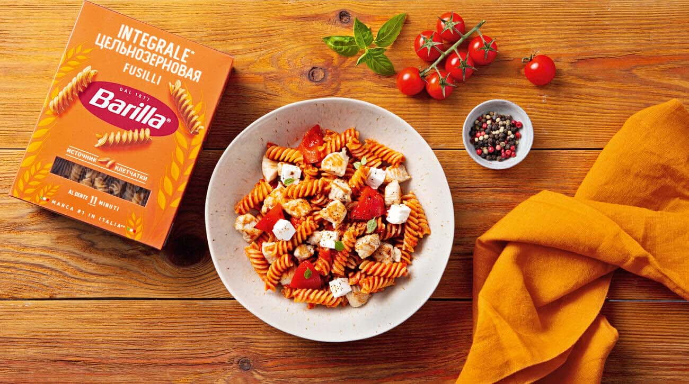

Цельнозерновая паста Barilla с индейкой и соусом маринара

Вам понадобится
Цельнозерновая паста Barilla с индейкой и соусом маринара
Как готовить
Кипятим чайник
2 литра кипятка наливаем в ковш и ставим на сильный огонь
Цельнозерновые фузилли Barilla и 2 ч. л. соли добавляем в ковш. Перемешиваем
Оставляем на 11 минут
Снимаем с огня. Отливаем 3 ст. л. (40 мл) воды из-под пасты в чашку, остальную сливаем
Возвращаем пасту в ковш. Накрываем крышкой
Перец гриль и сыр фета режем небольшими кубиками
Сковороду с 1 ст. л. раст. масла ставим на сильный огонь и нагреваем
Индейку (без жидкости) кладем в сковороду
Специями и по 0,25 ч. л. соли и перца посыпаем
Помешиваем 1,5 минуты
Перец гриль добавляем в сковороду
Помешиваем 30 секунд
Уменьшаем огонь до среднего
Томатный соус маринара и 3 ст. л. (40 мл) воды из-под пасты добавляем в сковороду
Помешиваем 30 секунд
Пасту и кусочки сыра фета добавляем в сковороду
Перемешиваем и снимаем с огня. Раскладываем по тарелкам
Корректируйте время приготовления в соответствии с вашей кухонной техникой